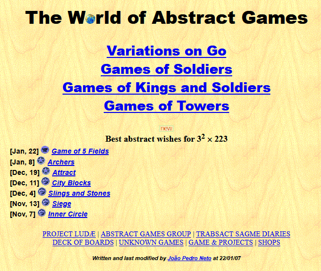

My first contact with abstract games was through Checkers, Chess (as most people in the West), and Connect-4, in the late 1970s. Around 1985, I discovered Jeux et Stratégie, a magazine that instantly fascinated me. I read what I could understand from my incipient French, and began making my own copies of games using thick card paper, creating boards for the Game of the Jungle, Bangh Chal, and even a Go board, for which I used Risk pieces as stones (I actually bought the white and black armies from a friend who didn’t like the game, to add to my own set). The French magazine introduced me to the history of board games, and to the modern diversity of the genre1. Another important event, in the early 1990s when I was already studying at university, was the creation of the rec.games.abstract newsgroup, allowing the interaction with a community of like-minded people. I do think that J&S and r.g.a were the most influential elements in my path toward abstract games.2
During the 1990s, I began using that new technology, the email, to play board games with fixed-width fonts to represent boards and moves. Sometimes, the imagination required to depict unusual topologies and pieces almost felt like an exercise in ASCII art. That's when I met and played with people such as Claude Chaunier, Ralph Betza, Ed Jackman, John Lawson, Steven Meyers, Clark D. Rodeffer, Cameron Browne, and Bill Taylor3. The medium of email, much like traditional correspondence, proved well suited for discussing and testing new ideas, not only in games, but for many other topics in science, philosophy, politics, etc. My first design experiments were in chess variants, where I interacted also with Hans Bodlaender and Fergus Duniho, among others, with Chaunier being my main source of collaboration at the time.
A few years later, in 1998, Zillions appeared and it was like a seismic shock. For the first time, we could implement board games using a very high-level language. I did some experiments and it had a strong impact on the way I thought about meta-strategies and game generalization. It made me start thinking in terms of mutators and ludemes, concepts that since become quite relevant in the way I approach game design.
Around this time, my personal life took a very different turn: I moved to São Paulo, Brazil, which naturally brought many changes. I found myself in a different culture, uprooted from family and friends, and one thing that remained constant, a kind of cultural anchor, was board games. In São Paulo, a much more cosmopolitan city than Lisbon (my home city) was at the time, I even bought my first real Go set. It was on that Go board that I had the idea for Gonnect, one of my most successful games and, probably, the first non-Chess Variant abstract game I designed. Another thing I did back then, with that Go board, was to paint some stones with different colors to play (mostly alone) few Go variants. That was the seed needed to try something new: why not make a simple website listing Go variants? I called it Variations on Go. The initial website was hosted in Brazil, at http://sites.uol.com.br/vascog/gv, though that site has long since been lost.
Another important event in the late 1990s, while I was still living in Brazil, was getting in touch online with Jorge Nuno Silva. It was a curious coincidence, since we worked in the same place, at the University of Lisbon, but we never met before! Jorge Nuno was also interested in board games, although his focus was more in the mathematical and historical aspects, not in collecting and designing as I was. Our interests, however, complemented each other rather well. When I return to Portugal in the spring of 2001, we began working together on several initiatives, especially related to pedagogy with young students. These efforts eventually led, in Lisbon in 2004, to the first Portuguese Board Games Contest, which introduced abstract games as tools for mathematical thinking. This became an important national event in the context of mathematics education.
a panoramic photo of the 4th edition, at Braga
There already have been eighteen editions, with hundreds of thousands of students participating at the school level, all trying to reach the day of the finals. Another outcome of these tournaments, along with other related initiatives, was the founding of the Ludus Association in 2005, created to build bridges between board games, mathematics, and history.
But going back to the year 2000, the Variations on Go website continue to grow and, especially at the time, there wasn't much online information about Go variants. So I decided to add a new section: games that could be played on a Go board (later, I included games for hexagonal boards). I called it Games of Soldiers, referring to games that could be played with just one type of piece (just like Go). And the site became more general, a website about...
what remains from the oldest snapshot at archive.org;
the Kings and Soldiers section was just starting
With time, already in 2001 I started a new section, Games of Kings and Soldiers referring to games that needed two types of pieces. In early 2002 a new section appeared about other game projects of mine, which this biographical page is, currently, part of:
at that time, the project's page only had the Javascript tools that WAG
uses to show diagrams
Later that year, a third game section was added, Games and Towers about stacking games:

the LUDAE project was aimed at making self-playing meta-program
(a bit like Zillions and Ludii) but was discontinued, a year later
Between 2001 and 2007 I added games on a regular basis, and the website reached more than 500 games.

However, the work of adding new games was taking its toll. Searching for games, writing their rules, adding diagrams and examples were all time consuming tasks. Meanwhile, the natural course of my personal life required more time for other activities. So, around the end of 2007, I stop updating WAG.
Up until 2007, I continued designing games -- some of which I consider quite good: Nex, Iqishiqi, Unstack, Court, Dagger Gomoku, Triskelion, Lisbon, Xana, Sesqui --, but around 2007 I also stopped creating games with original ludemes. My activity continued mainly in the realm of new variants, most in collaboration with Bill, though that work had become rather marginal.
That didn't mean my gaming activity stopped completely. In 2004 I decided to start a blog about board games, which I called Trabsact Sagme Diaries, an anagram of 'Abstract Games'. Trabsact Sagme was a fictional future exo-ludologist whose biography and backstory I invented (in the 1990s and 2000s, I also enjoyed writing fiction). Another goal of the blog was to include many of the new games that Bill and I had created during our conversations. I didn't feel I had the time, or energy, to include those games directly at WAG (the queue was already enormous), so I simply made a blog post for each new game, with its rules and a sample match drawn from our plays. I kept posting new games until 2013, six years after WAG had stagnated.
Meanwhile, I continued my activities with Ludus and co-authored three books in Portuguese about board games with Jorge Nuno. The first of them, Mathematical Games, Abstract Games, was published by Dover in 2007:
Together with Jorge Nuno Silva and Carlos Santos, we wrote two collections on historical board games and mathematics: Jogos Com História (2007) and Jogos do Mundo (2008) produced in collaboration with newspaper Público and the weekly magazine Visão. The project was a great success -- well, in Portugal, which is a small country --, selling tens of thousands of kits that combined board games with mathematical puzzles.
the 9th volume of the 2007 collection, about the origins of Algebra and Alquerque
During those years, I began participating at the Board Games Studies colloquia, where I met many fascinating people, most of them focused on the history of games. Among them were David Parlett, Thierry Depaulis, Alex de Voogt, Irving Finkel, Ulrich Schädler, David Singmaster, among many others. I would like to single out one name in particular: Fred Horn. Fred has decades of curiosity about old board games, with endlessly generosity and filled with joy for the subject. He shared with me a wealth of historical material about games from the 20th century, which I continued posting on Sagme's between 2011 and 2019 (albeit sporadically).
Overall, though, the 2010s were a decade of much less ludic activity. My main gaming activities were still with Bill. We also played a few three-player email games, mostly with Cameron Browne (more in the 2000s), and occasionally with Nick Bentley and Craig Duncan (during brief periods in the 2010s). My main interests, at the time, shifted toward more technical subjects: Programming, Statistics, Machine Learning and Combinatorial Game Theory (well, this last one was somewhat related).
After Bill's passing, my gaming activity essentially came to a halt. Later, in 2022, after talking with Craig about Bill (they had also been gaming partners), we began playing together, and fortunately have kept it up to this day.
At the end of 2024, I decided to start gathering my life's work and hobbies (not only about games) into a proper webpage. After a few weeks on the project, I turned my attention to my board game material. One of the first things I did was to transfer WAG (previously hosted at the Univ. of Lisbon) to GitHub, making it more independent and, hopefully, more robust. Then I finally decided to tackle a lingering to-do item I had avoided for fifteen years: my immense queue of unpublished games. At that time, there were thousands of disorganized files to process. That's what I devoted my free time to during most of 2025. Around a hundred games were included into the WAG pages. Some 400 games-- many with images already lost to the graveyard of the internet --, I decided to post on Sagme's, thus revitalizing the blog. But instead of releasing everything in a massive publication tsunami, I scheduled their publication between early 2025 and the end of 2030. After ten months of steady work, the much dreaded to-do list hydra was finally vanquished, all its heads cut!
WAG's index page in 2025
In 2025, I made many other updates to WAG: adding the content of old newsgroups (such as r.g.a,), creating new curated listings of games (the 19th and 20th century canons), compiling a timeline of the last 250 years of board games, and writing this biography. I also built a table-like database of abstract games up to the present day, assigning a set of ludemes to each game, something very useful to search for related games. On Board Game Geek, I collected the community's design contributions from the BGG forums into several geeklists.
And 2025 was also the year I resumed designing games, after many quiet years. My most promising contribution in 2025 was Spora, which I regard as one of my best designs. Perhaps it was the release of stored energy from an almost 'lost' decade, but 2025 became my most productive year ever in the field of abstract games. In a way, I feel my main task with WAG has been accomplished. What remains now is to manage and curate what the future brings. While I can.
Lisbon, November 2025
João Pedro Neto
______
[1] In the 1980s, and early 1990s, my early designs explored different directions. Together with some friends, especially Luís Francisco Carvalho, we created a wild, economics-based game where we would have an initial lottery where an initial lottery distributed the countries of the world. Players then engaged in long export/import negotiations to secure the resources they needed, using dozens of trade tables we had found in various publications. The game was so complex that we never even made it past the setup! Another project was a World War II wargame, with an big map (it had more than one square meter) and a rule set that made each battle feel like a mix between Chess and Diplomacy (fond memories, and we did play that one). A third line of interest was Diplomacy variants. I designed one based on World War II, introducing new units and concepts such as planes and U-boats, and another inspired by Machiavelli, itself a well-known Diplomacy variant.
[2] A third important influence on my journey toward abstract games came around 1992–93, when I managed to print some obscure online documents about Christian Freeling’s games. This was back in the days when web browsers were just being developed. I believe it was still years before Midsports.nl appeared. I was fascinated by the rules of games like Havannah, which opened my eyes to how simple yet deep new abstract games could be.
[3] By the late 1990s, most of my email correspondents had drifted away, except for Bill Taylor. We kept talking and playing for more than twenty years, until Bill's sudden passing in 2021. I finally organized a page with most of the games we developed and tested during that time. Over those many years of weekly correspondence, we became good friends, talking not only about games (even if that was always our main subject, as expected for two nerds) but also about life, the universe, and everything else (yes, we were both Douglas Adams fans). It was one of those friendships made possible by technology, given that our countries were almost at opposite ends of the world!